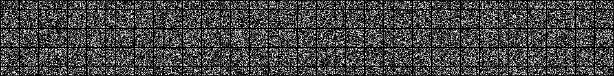
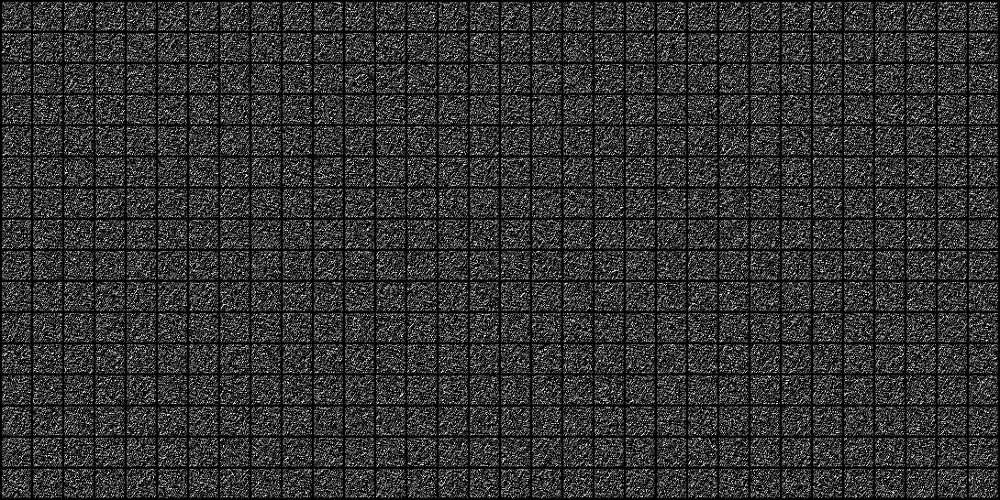
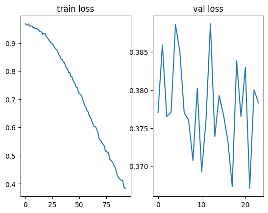
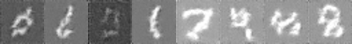
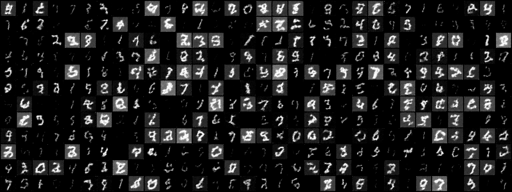

NOISE_TIME_STEPS = 10
noise_scheduler = DDPMScheduler(
num_train_timesteps=NOISE_TIME_STEPS,
beta_schedule="squaredcos_cap_v2" # beter for small img sizes
)Diffusion Model
Neural net modules
Noise Scheduler
Usage
B, C, H, W = 100, 3, 32, 32
xb = torch.zeros((B,C,H,W))
print(f"xb: {xb.shape}")
noise = torch.randn(xb.shape)
print(f"noise: {noise.shape}")
time_steps = torch.linspace(0, NOISE_TIME_STEPS-1, B).long()
# time_steps = torch.randint(0, NOISE_TIME_STEPS, (B,))
print(f"time_steps: {time_steps.shape}")
noisy_images = noise_scheduler.add_noise(xb, noise, time_steps)
print(f"noisy_images: {noisy_images.shape}")
show_images(noisy_images, ncols=10)xb: torch.Size([100, 3, 32, 32])
noise: torch.Size([100, 3, 32, 32])
time_steps: torch.Size([100])
noisy_images: torch.Size([100, 3, 32, 32])U-Net: Noise prediction
B,C,H,W = xb.shape
model = UNet2DModel(
sample_size=H,
in_channels=C,
out_channels=C,
block_out_channels=(32, 64, 128, 256)
)Usage
print(noisy_images.shape, time_steps.shape)
with torch.no_grad():
noise_pred = model(noisy_images, time_steps).sample
show_images(noise_pred, ncols=10)torch.Size([100, 3, 32, 32]) torch.Size([100])Training
Data
BATCH_SIZE = 512
cfg = OmegaConf.load('../config/data/image/mnist.yaml')
tfs = transforms.Compose(
[transforms.ToImage(),
transforms.Resize(32),
# transforms.Normalize((0.1307,), (0.3081,))
]
)
dm = instantiate(cfg, batch_size=BATCH_SIZE, transforms=tfs, num_workers=20)
dm.prepare_data()
dm.setup()
# check properties
print(f"num_classes: {dm.num_classes}, batch_size: {dm.batch_size}")
print(f"labels: {dm.label_names}")
# sample
x, y = dm.test_ds[0]
print(f"X: {x.shape}, Y: {y}")
# batch
xb,yb = next(iter(dm.train_dataloader()))
print(f"X: {xb.shape}, Y: {yb.shape}")
B,C,H,W = xb.shape
dm.show(0)[22:28:16] INFO - Init ImageDataModule for mnist
/user/s/slegroux/miniconda3/envs/nimrod/lib/python3.11/site-packages/lightning/pytorch/utilities/parsing.py:209: Attribute 'transforms' is an instance of `nn.Module` and is already saved during checkpointing. It is recommended to ignore them using `self.save_hyperparameters(ignore=['transforms'])`.
[22:28:18] INFO - loading dataset mnist with args () from split train
[22:28:18] INFO - loading dataset mnist from split train
Overwrite dataset info from restored data version if exists.
[22:28:19] INFO - Overwrite dataset info from restored data version if exists.
Loading Dataset info from ../data/image/mnist/mnist/0.0.0/77f3279092a1c1579b2250db8eafed0ad422088c
[22:28:19] INFO - Loading Dataset info from ../data/image/mnist/mnist/0.0.0/77f3279092a1c1579b2250db8eafed0ad422088c
Found cached dataset mnist (/user/s/slegroux/Projects/nimrod/nbs/../data/image/mnist/mnist/0.0.0/77f3279092a1c1579b2250db8eafed0ad422088c)
[22:28:19] INFO - Found cached dataset mnist (/user/s/slegroux/Projects/nimrod/nbs/../data/image/mnist/mnist/0.0.0/77f3279092a1c1579b2250db8eafed0ad422088c)
Loading Dataset info from /user/s/slegroux/Projects/nimrod/nbs/../data/image/mnist/mnist/0.0.0/77f3279092a1c1579b2250db8eafed0ad422088c
[22:28:19] INFO - Loading Dataset info from /user/s/slegroux/Projects/nimrod/nbs/../data/image/mnist/mnist/0.0.0/77f3279092a1c1579b2250db8eafed0ad422088c
[22:28:23] INFO - loading dataset mnist with args () from split test
[22:28:23] INFO - loading dataset mnist from split test
Overwrite dataset info from restored data version if exists.
[22:28:24] INFO - Overwrite dataset info from restored data version if exists.
Loading Dataset info from ../data/image/mnist/mnist/0.0.0/77f3279092a1c1579b2250db8eafed0ad422088c
[22:28:24] INFO - Loading Dataset info from ../data/image/mnist/mnist/0.0.0/77f3279092a1c1579b2250db8eafed0ad422088c
Found cached dataset mnist (/user/s/slegroux/Projects/nimrod/nbs/../data/image/mnist/mnist/0.0.0/77f3279092a1c1579b2250db8eafed0ad422088c)
[22:28:24] INFO - Found cached dataset mnist (/user/s/slegroux/Projects/nimrod/nbs/../data/image/mnist/mnist/0.0.0/77f3279092a1c1579b2250db8eafed0ad422088c)
Loading Dataset info from /user/s/slegroux/Projects/nimrod/nbs/../data/image/mnist/mnist/0.0.0/77f3279092a1c1579b2250db8eafed0ad422088c
[22:28:24] INFO - Loading Dataset info from /user/s/slegroux/Projects/nimrod/nbs/../data/image/mnist/mnist/0.0.0/77f3279092a1c1579b2250db8eafed0ad422088c
[22:28:25] INFO - split train into train/val [0.8, 0.2]
[22:28:25] INFO - train: 48000 val: 12000, test: 10000num_classes: 10, batch_size: 512
labels: ['0', '1', '2', '3', '4', '5', '6', '7', '8', '9']
X: torch.Size([1, 32, 32]), Y: 7
X: torch.Size([512, 1, 32, 32]), Y: torch.Size([512])Noise Scheduler / “noisifier”
NOISE_TIME_STEPS = 100
noise_scheduler = DDPMScheduler(
num_train_timesteps=NOISE_TIME_STEPS,
beta_schedule="squaredcos_cap_v2" # beter for small img sizes
)
B,C,H,W = xb.shape
model = UNet2DModel(
sample_size=H,
in_channels=C,
out_channels=C,
block_out_channels=(32, 64, 128, 256)
)
# generate gaussian noise images of shape (B, C, H, W)
noise = torch.randn(xb.shape)
# generate different time steps for each image in batch
time_steps = torch.linspace(0, NOISE_TIME_STEPS-1, B).long()
# generate more or less noise from scheduler depending on time step
noisy_images = noise_scheduler.add_noise(xb, noise, time_steps)
show_images(noisy_images, ncols=64)
# predict noise from noisy image at time_step
with torch.no_grad():
noise_pred = model(noisy_images, time_steps).sample
show_images(noise_pred, ncols=32)
LR scheduler & optimizer
device = get_device()
print(f"device: {device}")
NOISE_TIME_STEPS = 1000
NUM_EPOCHS = 1
lr = 1e-4
lr_warmup_steps = 500
# total steps =number of batches * num_epochs
num_training_steps = len(dm.train_dataloader()) * NUM_EPOCHS
print(f"num_training_steps: {num_training_steps}")
model = UNet2DModel(
sample_size=H,
in_channels=C,
out_channels=C,
block_out_channels=(32, 64, 128, 256)
)
model.to(device)
noise_scheduler = DDPMScheduler(num_train_timesteps=NOISE_TIME_STEPS)
optimizer = torch.optim.AdamW(model.parameters(), lr=lr)
criterion = nn.MSELoss()
lr_scheduler = get_cosine_schedule_with_warmup(
optimizer=optimizer,
num_warmup_steps=lr_warmup_steps,
num_training_steps=num_training_steps
)[22:30:10] INFO - Using device: cudadevice: cuda
num_training_steps: 94Training Loop
train_step_losses = []
val_step_losses = []
lrs = []
for epoch in range(NUM_EPOCHS):
i = 0
model.train()
n_steps, total_loss = 0, 0
for step, (images, labels) in tqdm(enumerate(dm.train_dataloader()), total=len(dm.train_dataloader()), leave=False):
optimizer.zero_grad()
images, labels = images.to(device), labels.to(device)
B, C, H, W = images.shape
# sample noise
noise = torch.randn(images.shape).to(device)
# sample random timesteps
# timesteps = torch.randint(0, NOISE_TIME_STEPS, (images.shape[0],)).to(device)
timesteps = torch.randint(0, NOISE_TIME_STEPS, (B,)).to(device)
# create noisy image at timestep with noise scheduler
noisy_images = noise_scheduler.add_noise(images, noise, timesteps)
# train model to predict noise
noise_pred = model(noisy_images, timesteps, return_dict=False)[0]
# output should be as close to input as possible
loss = criterion(noise_pred, noise)
n_steps += len(images)
total_loss += (loss.item() * len(images))
train_step_losses.append(loss.item())
current_lr = optimizer.param_groups[0]['lr']
lrs.append(current_lr)
# logger.info(f"loss.item(): {loss.item()}, len(images): {len(images)}")
# logger.info(f"Epoch: {epoch}, step: {step}, n_steps: {n_steps}, loss: {loss.item()}")
loss.backward()
optimizer.step()
lr_scheduler.step()
logger.info(f"Epoch: {epoch} train_loss: {total_loss / n_steps}")
model.eval()
total_loss, n_steps = 0, 0
for step, (images, labels) in tqdm(enumerate(dm.val_dataloader()), total=len(dm.val_dataloader()), leave=False):
optimizer.zero_grad()
images, labels = images.to(device), labels.to(device)
# sample noise
noise = torch.randn(images.shape).to(device)
# sample random timesteps
timesteps = torch.randint(0, NOISE_TIME_STEPS, (images.shape[0],)).to(device)
# create noisy image at timestep with noise scheduler
noisy_images = noise_scheduler.add_noise(images, noise, timesteps)
# train model to predict noise
outputs = model(noisy_images, timesteps, return_dict=False)[0]
# output should be as close to input as possible
loss = criterion(outputs, noise)
val_step_losses.append(loss.item())
n_steps += len(images) # bs
total_loss += loss.item() * len(images)
# logger.info(f"Epoch: {epoch}, step: {step}, n_steps: {n_steps}, loss: {loss.item()}")
logger.info(f"Epoch: {epoch} val_loss: {total_loss / n_steps}")/user/s/slegroux/miniconda3/envs/nimrod/lib/python3.11/site-packages/torch/nn/modules/conv.py:456: UserWarning: Plan failed with a cudnnException: CUDNN_BACKEND_EXECUTION_PLAN_DESCRIPTOR: cudnnFinalize Descriptor Failed cudnn_status: CUDNN_STATUS_NOT_SUPPORTED (Triggered internally at ../aten/src/ATen/native/cudnn/Conv_v8.cpp:919.)
return F.conv2d(input, weight, bias, self.stride,
[22:15:30] INFO - Epoch: 0 train_loss: 0.7241547261873881[22:15:32] INFO - Epoch: 0 val_loss: 0.3778018388748169fig, axs = plt.subplots(1,2)
axs[0].plot(train_step_losses)
axs[0].set_title("train loss")
axs[1].plot(val_step_losses)
axs[1].set_title("val loss")
# axs[2].plot(lrs)
# axs[2].set_title("learning rate")
plt.show()
Test Image Generation
# Using pre-defined HF pipeline
pipeline = DDPMPipeline(unet=model, scheduler=noise_scheduler).to(device)
img_gen = pipeline(batch_size=8)
make_grid(img_gen.images)
img_gen.images[0]# use our own sampler based on noise_scheduler
@time_it
def generate_image(model, images_shape, device, noise_scheduler):
# start with noise images (B,C,H,W)
sample = torch.randn(images_shape).to(device)
for i, t in enumerate(noise_scheduler.timesteps):
with torch.no_grad():
# predict noise
residual = model(sample, t).sample
# update sample with step
sample = noise_scheduler.step(residual, t, sample).prev_sample
# sample = (sample / 2 + 0.5).clamp(0, 1)
return sample
# plt.imshow(image[0].permute(1,2,0).cpu().numpy())images = generate_image(model, (B,C,H,W), device, noise_scheduler)generate_image: 43.519 secondsshow_images(images, ncols=32)
DiffusorX
Diffussor is basically a noise regressor
DiffusorX
DiffusorX (nnet:diffusers.models.unets.unet_2d.UNet2DModel, noise_scheduler:diffusers.schedulers.scheduling_ddpm.DDPMSched uler, optimizer:Callable[...,torch.optim.optimizer.Optimizer], scheduler:Optional[Callable[...,Any]]=None)
Helper class that provides a standard way to create an ABC using inheritance.
| Type | Default | Details | |
|---|---|---|---|
| nnet | UNet2DModel | ||
| noise_scheduler | DDPMScheduler | ||
| optimizer | Callable | optimizer, | |
| scheduler | Optional | None | scheduler |
B, C, H, W = 16, 1, 32, 32
optimizer = partial(torch.optim.AdamW, lr=3e-4)
nnet = UNet2DModel(
sample_size=H,
in_channels=C,
out_channels=C,
block_out_channels=(32, 64, 128, 256)
)
noise_scheduler = DDPMScheduler(
num_train_timesteps=1000,
beta_start=0.00085,
beta_end=0.012,
)
print(f"steps: {noise_scheduler.config.num_train_timesteps}")
model = DiffusorX(nnet, noise_scheduler, optimizer)
x = torch.randn((B, C, H, W))
t = torch.randint(0, noise_scheduler.config.num_train_timesteps, (B,))
print(f"x:{x.shape}, t: {t.shape}, {type(t)}")
noise = nnet(x, t).sample
print(noise.shape)
print(model(x, t).shape)[22:30:19] INFO - Regressor: init
/user/s/slegroux/miniconda3/envs/nimrod/lib/python3.11/site-packages/lightning/pytorch/utilities/parsing.py:209: Attribute 'nnet' is an instance of `nn.Module` and is already saved during checkpointing. It is recommended to ignore them using `self.save_hyperparameters(ignore=['nnet'])`.
[22:30:19] INFO - DiffusionX: initsteps: 1000
x:torch.Size([16, 1, 32, 32]), t: torch.Size([16]), <class 'torch.Tensor'>
torch.Size([16, 1, 32, 32])
torch.Size([16, 1, 32, 32])model = model.to(device)
imgs = model.generate_images(x.shape)[22:31:00] INFO - diffuse a batchshow_images(imgs, ncols=8)
torch.set_float32_matmul_precision("medium")
cfg = OmegaConf.load('../config/model/image/diffusorx.yaml')
optim = partial(torch.optim.AdamW, lr=3e-4)
model = instantiate(cfg)(optimizer= optim)
total_time_steps = model.noise_scheduler.config.num_train_timesteps
x = torch.randn((B, C, H, W)) #.to('mps')
t = torch.randint(0, total_time_steps, (B,)) #.to('mps')
print(model(x, t).shape)[22:32:21] INFO - Regressor: init
[22:32:21] INFO - DiffusionX: inittorch.Size([16, 1, 32, 32])